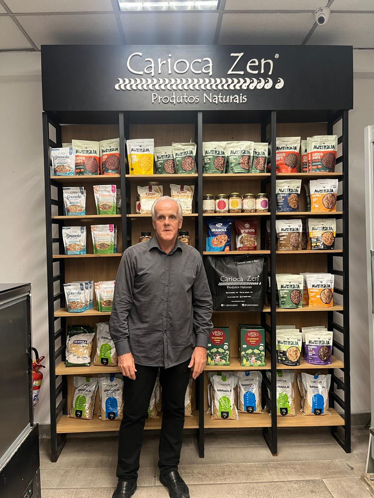
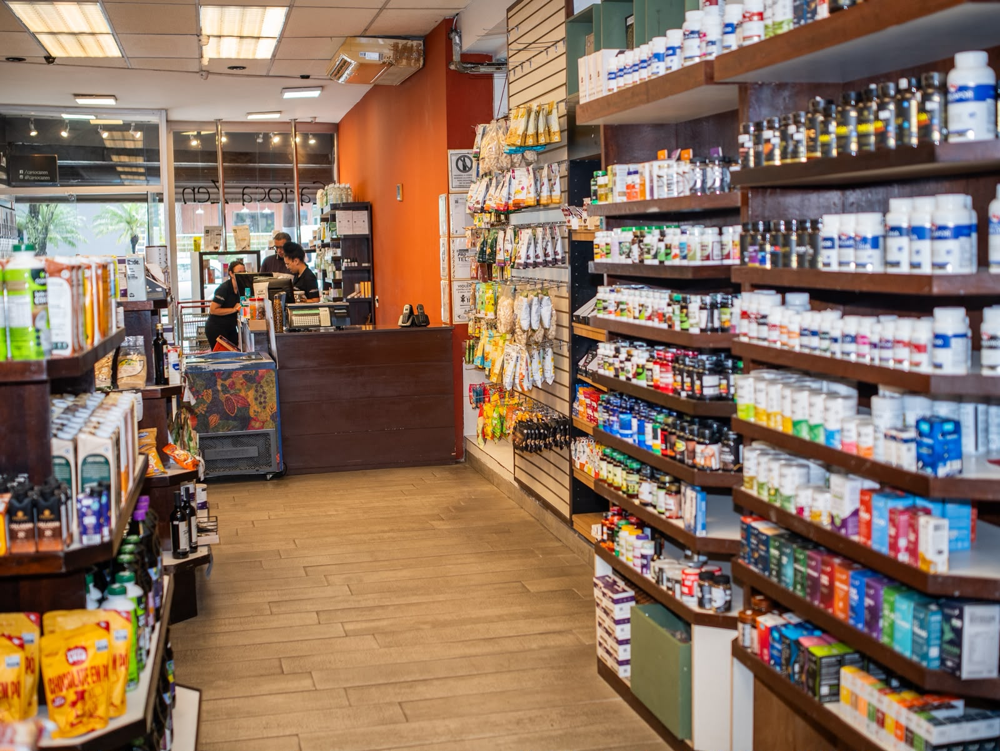
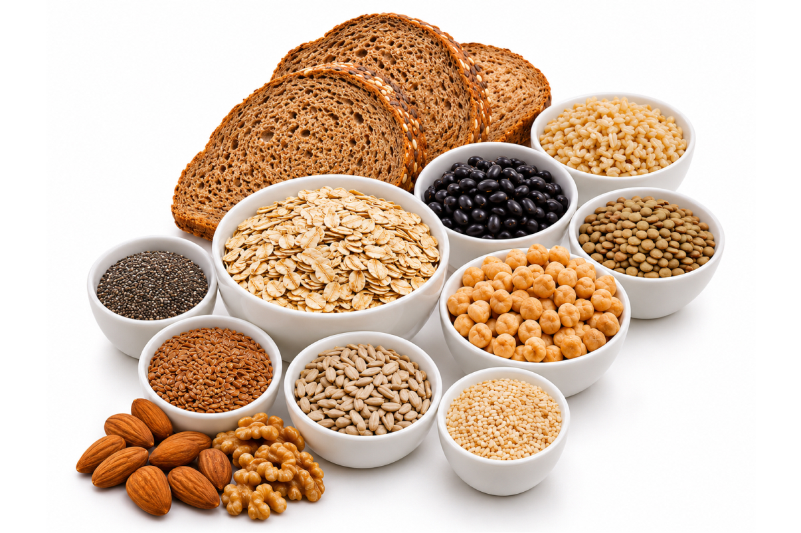

Em alta no mercado, Alimentos funcionais exigem rigor
Por: Bruna Cruz
Procura, confiança e giro de estoque decidem o que fica nas prateleiras.
Publicidade
O consumidor já não busca só “ser saudável” de forma genérica; ele quer alimentos que ajudem no humor, no sono, na digestão, no envelhecimento, com ingredientes fermentados, fibras, probióticos, proteínas funcionais — bem especificamente.
Com cada vez mais consciência da relação de causa e efeito na relação com os alimentos, saúde intestinal, clareza mental, foco, pré-treino etc. são motores de compra (e não apenas nichos). A busca por bem-estar está mudando a forma como parte dos consumidores escolhe o que comer e abre oportunidades para quem vende alimentos.
Mudança de consciência
Fonte: NielsenIQ (NIQ) Homescan, estudo Estilos de Vida 2024, com consumidores brasileiros
86%
dos consumidores brasileiros têm adotado pelo menos um hábito mais saudável.
51%
procuram produtos com fibras e vitaminas em suas compras.
59%
estão dispostos a pagar mais caro por produtos que promovam bem-estar e saúde.
45%
reduziram o consumo de alimentos ultraprocessados e industrializados.
Para o pequeno empreendedor, a questão é entender quais necessidades estão por trás da procura e como atendê-las de forma sustentável no seu negócio.
Proteína em alta
A busca por proteínas avançou sobre a rotina do brasileiro, puxada pela cultura fitness, pelo envelhecimento da população e pelo avanço das canetas emagrecedoras — que exigem reforço proteico para preservar a musculatura durante a perda de peso. Segundo a Euromonitor International, esses dois últimos grupos devem liderar o crescimento de 11% na demanda global por proteínas até 2029. No Brasil, a indústria acelerou a oferta de lanches práticos e funcionais, refletindo uma alta já captada nos caixas do varejo:
O salto começou em 2025: entre janeiro e outubro daquele ano, as vendas já disparavam no varejo:
Cada ícone = 10% de crescimento
Fonte: Scanntech, em parceria com a McKinsey · Período: janeiro a outubro de 2025 · Unidade: crescimento em volume (%)
O poder da novidade
Na Carioca Zen, tradicional loja de produtos naturais no Rio de Janeiro (RJ), o proprietário Sérgio Moscoso relata que os snacks proteicos estão entre os produtos mais procurados. Ao mesmo tempo, ele observa que o apelo de uma categoria pode perder força quando deixa de ser novidade.
Para avaliar as tendências, é importante acompanhar a evolução das vendas e a frequência da compra de reposição do seu negócio ao longo do tempo.

O que o empreendedor pode fazer antes de aderir à onda
Testar novos itens em quantidades menores
Observar a recompra
Calcular a margem antes de ampliar o estoque
Transparência nas informações
O aumento da oferta também exige atenção à maneira como os produtos são apresentados ao consumidor. Um alimento pode destacar a quantidade de proteína na embalagem e, ainda assim, conter outros componentes que precisam ser considerados na avaliação nutricional.
O alerta serve tanto para quem produz e vende alimentos manipulados quanto para quem revende produtos industrializados. Esse cuidado dialoga com a experiência de Sérgio, que observa consumidores atraídos por expressões como “integral”, “natural” e “proteico” sem necessariamente verificar a composição completa.
52
produtos ultraprocessados com alegações de proteína analisados
11
com mensagens que poderiam induzir o consumidor ao erro
Fonte: Idec (Instituto de Defesa de Consumidores), 2025
Levantamento do Idec (Instituto de Defesa de Consumidores), divulgado em 2025, analisou 52 produtos ultraprocessados com alegações de proteína nos rótulos. Em 11 deles, identificou mensagens que poderiam induzir o consumidor ao erro. Segundo o instituto, o destaque dado ao nutriente pode criar uma percepção equivocada sobre a quantidade de proteína consumida ou levar à impressão de que o produto é mais saudável.
Para quem comercializa alimentos, é importante informar com clareza: apresentar ingredientes, explicar as características dos produtos e evitar promessas de benefícios que não possam ser comprovadas.

Fibras no radar do mercado
Se a proteína ganhou destaque nas prateleiras, as fibras podem ser as próximas oportunidades de negócio. Segundo Ana Paula Seixas, CEO da rede brasileira de lojas de produtos naturais Mundo Verde, as fibras podem representar um próximo movimento de consumo após a expansão dos produtos proteicos.

A previsão é relevante para negócios que trabalham com alimentos integrais, aveia, sementes, leguminosas e outras fontes de fibras. Antes de sair mudando a oferta, a recomendação para o empreendedor é a mesma da proteína: testar produtos e acompanhar os resultados antes de investir em uma nova categoria.
Alimentos funcionais
São considerados alimentos funcionais aqueles alimentos ou ingredientes que, além de fornecerem nutrientes básicos (como vitaminas e minerais), oferecem benefícios extras à saúde e ajudam a reduzir o risco de doenças.
A comercialização desses alimentos e suplementos exige atenção redobrada às normas sanitárias e de defesa do consumidor, independentemente do porte do negócio.
6 cuidados essenciais para atuar dentro da lei e garantir a segurança do cliente
-
1
Verifique a regularização dos produtos
Antes de comprar de um fornecedor, confira se o produto está regularizado conforme a categoria e as regras aplicáveis. Desde setembro de 2024, os suplementos alimentares estão sujeitos à notificação na Anvisa, pelas regras da RDC 843/2024 e da IN 281/2024. O prazo para os produtos antigos se adequarem terminou em 1º de setembro de 2026.
-
2
Confira rótulos, origem e validade
Verifique fabricante ou importador, lote, prazo de validade, ingredientes, tabela nutricional e advertências obrigatórias. Mantenha notas fiscais e registros dos fornecedores para rastrear a origem dos produtos.
-
3
Não prometa benefícios sem respaldo
Suplementos não podem prometer prevenir, tratar ou curar doenças, nem fazer alegações de emagrecimento ou aumento da imunidade fora das condições autorizadas.
-
4
Tenha cuidado com produtos vendidos como “naturais” ou “funcionais”
Essas expressões não garantem, por si só, que um produto seja mais saudável ou seguro. Confira a composição e evite descrições que induzam o consumidor ao erro.
-
5
Confira ingredientes e restrições de uso dos suplementos
Os constituintes precisam ser autorizados para essa categoria, e os rótulos devem informar recomendações de uso, advertências e restrições aplicáveis. Não comercialize produtos de origem desconhecida ou com promessas milagrosas.
-
6
Observe as exigências sanitárias do estabelecimento
Consulte a Vigilância Sanitária municipal sobre licenciamento, armazenamento e demais exigências aplicáveis ao tipo de atividade. As regras podem variar conforme o produto e a operação.
Hoje, o consumidor médio não busca apenas saciar a fome ou evitar doenças, mas usa a alimentação diária como ferramenta preventiva e de desempenho para o corpo e a mente.
Para o empreendedor, isso significa que ter apenas um produto saboroso, para quem quer atuar nesse nicho, não basta. O Mercado de Saúde e Bem-Estar (Health & Wellness) recompensa marcas que entregam funcionalidade real e transparente, mas pune com rigor quem usa apelos de saúde apenas como “maquiagem de marketing” (o chamado healthwashing) sem respaldo nutricional ou sanitário.